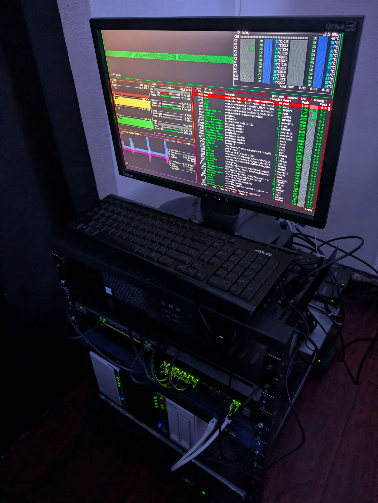
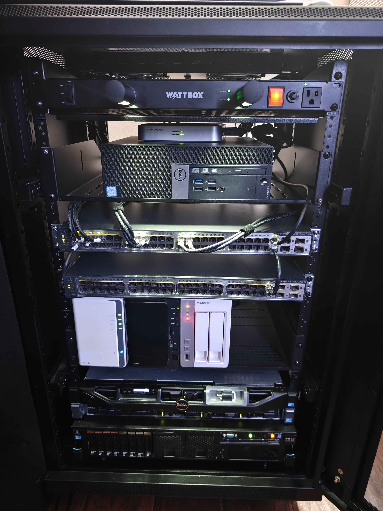
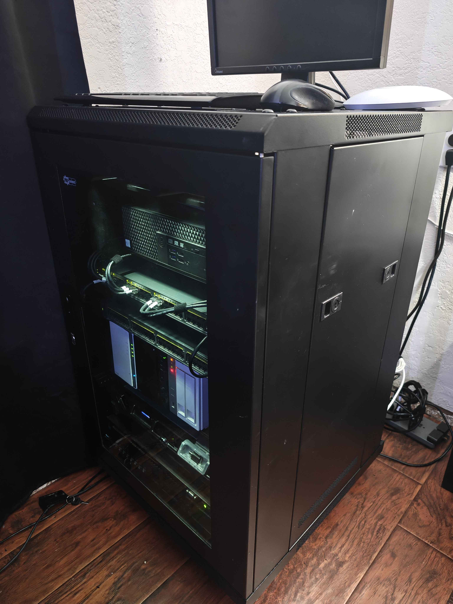
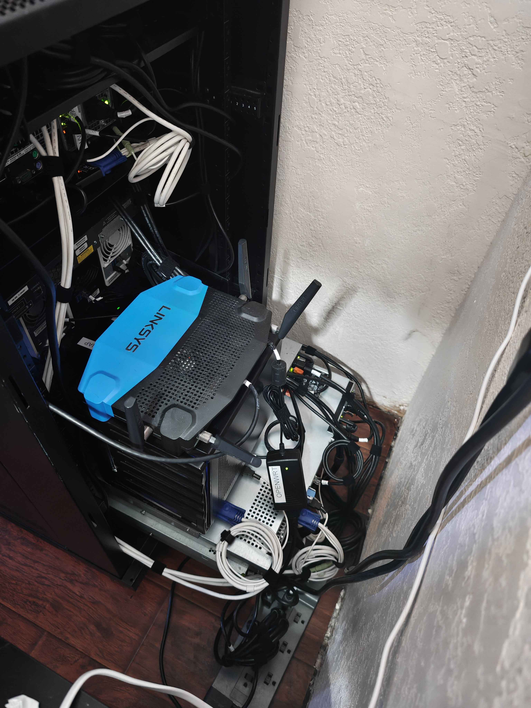
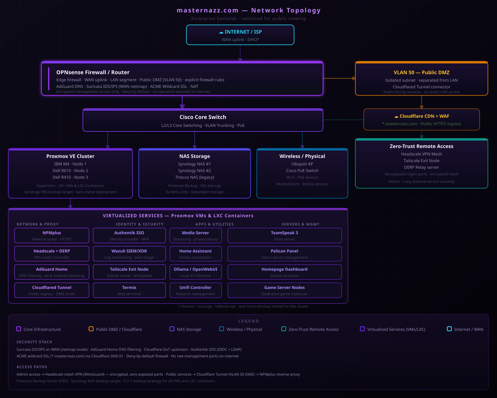

Featured Project | Infrastructure
Enterprise Homelab Architecture
A public-safe view of my enterprise-style homelab: virtualized compute, edge firewalling, switching, storage, secure access, identity, monitoring, and documentation built around real operational habits.
The Lab
Two-post open rack to full enclosed 4-post cabinet — built over about a year.




Sanitized Logical Diagram
The public diagram keeps the architecture useful while removing internal IPs, MAC addresses, serial numbers, exact firewall details, and credentials.

Architecture
- Bare-metal OPNsense edge firewall for routing, DNS, DHCP, and traffic policy.
- Proxmox-based virtualization across rackmount and small form factor hardware.
- Managed switching, wireless access, NAS storage, and internal service hosting.
- Reverse proxy and tunnel patterns for public-facing services without publishing private details.
- Documentation-first workflow for inventory, topology, services, and change tracking.
Why It Matters
This lab shows the kind of thinking a junior network or security technician needs: knowing how systems connect, where access should be controlled, what depends on what, and how to document changes so troubleshooting is faster.
Project Areas
Each page expands one part of the homelab into a resume-ready project.
OPNsense Edge Firewall
Hardened gateway implementation: VLAN segmentation, AdGuard DNS, and Suricata IDS.
View project ->Proxmox Cluster Management
Multi-node compute environment running 20+ VMs/LXCs with HA/quorum-aware cluster behavior.
View project ->Zero-Trust Remote Access
Headscale mesh VPN for admin access and Cloudflare Tunnel in a DMZ VLAN for public services — no open WAN ports.
View project ->Centralized Identity & Auth
Authentik implementation for SSO, OIDC, and LDAP across the lab infrastructure.
View project ->Cisco Switching & DMZ VLAN
Two Catalyst 3750 V2 switches, trunk port design, and VLAN 50 DMZ isolation for public ingress.
View project ->Live Service Status
Self-hosted Uptime Kuma on Proxmox LXC — 30+ monitors provisioned via socket.io API, published via Cloudflare Tunnel.
View project ->Wazuh SIEM / XDR
Self-hosted Wazuh collecting endpoint logs, Suricata IDS alerts, and file integrity events — SOC-style triage practice environment.
View project ->SkillsUSA Internetworking
Florida State Champion — 1st Place. Written exam, oral sales scenario, and hands-on prep. Advancing to NLSC Nationals in Atlanta.
View page ->Public-Safe Boundary
This portfolio intentionally names technologies and design patterns, but it does not publish private addressing, MAC addresses, live firewall rule detail, secrets, or complete configuration exports.
Get In Touch
Open to Junior Network Administrator, SOC Analyst, NOC, MSP, Help Desk, IT Support, and Cybersecurity Internship opportunities.
Email: NazeemDickey@gmail.com | Boynton Beach, FL